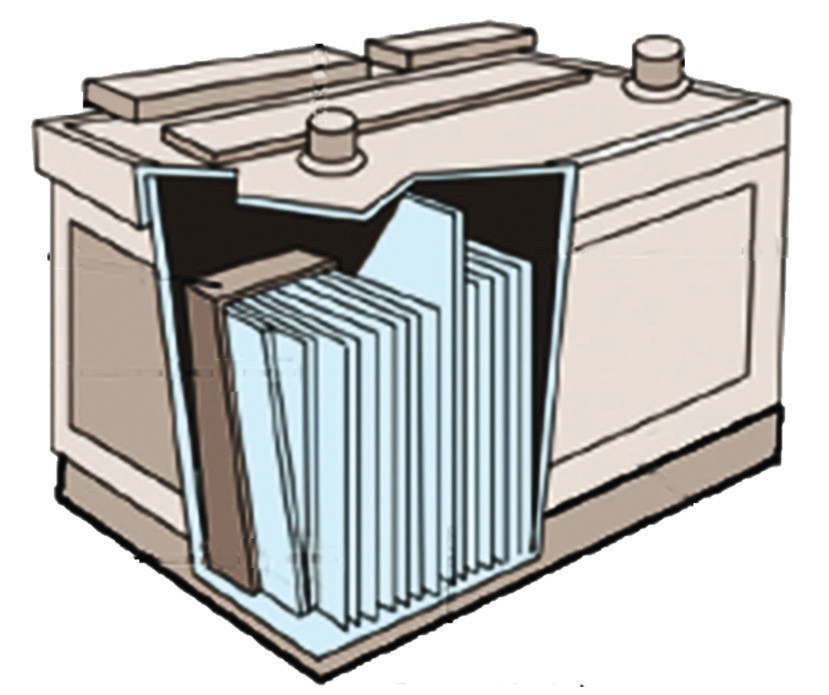

are all called primary cells. In this type of cell, the current is produced from non-recoverable or irreversible chemical reactions. For example, when all zinc has been dissolved in a simple cell, it will never be recovered to its original form by passing a current through the cell in the opposite direction.
Secondary cells
Unlike primary cells, secondary cells can be recharged after they have run down. Examples of secondary cells are the lead-acid cell and the nickel-ferrous cell. Secondary cells are also called accumulators.
Mode of action of lead-acid accumulator
The lead-acid battery consists of several lead-acid cells. Each cell has two groups of lead plates. One group forms a positive terminal while the other group forms a negative terminal. All positive terminal plates are connected with a connecting strap. This is also the case for negative terminal plates. The positive and negative terminal plates are connected so that they alternate. Between the plates are sheets of insulating material called separators. These are made up of porous wood or fibreglass. The separators prevent the positive and negative plates from coming into contact thereby avoiding the production of a short circuit.
The positive plates are made of lead dioxide while the negative plates are made of porous lead metal. The two sets of plates with the separators between them are placed in a container filled with a dilute solution of sulphuric acid. The term lead-acid refers to the lead plates and the sulphuric acid which are the main components of the battery. Figure 2.59 illustrates the components of the lead-acid accumulator.

Charging and discharging the lead-acid battery
When the battery is providing energy, it is said to be discharging. The energy is produced when the acid (electrolyte) gradually combines with the active material of the electrodes. This lowers the concentration of sulphuric acid.
Charging the lead-acid battery is to drive all the acid out of the plates and return it to the electrolyte. During charging (Figure 2.60(b)), a direct current is passed through the battery in the opposite direction to that during the discharge (Figure 2.60(a)). The negative terminal of the battery charger is connected to the negative terminal of the battery, while the positive terminal of the charger is connected to the positive terminal of the battery. This reverses the action of discharge and restores the battery to its